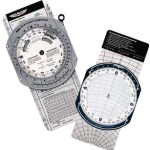

Ok so I bought an E6B now what? That’s the subject line of an email I received today! Rather than writing a huge email what better way then to make a video! How to use an e6b is a tough subject so I’ve organized this into a two video quiz. The first video poses the question and the second shows the explanation. As always if you have questions or comments leave them below the videos. Enjoy! – Jason
How Did You Do? Leave Me A Comment Below!
Many Blessings To PJ a great fan of MzeroA and personal friend who took time to help fellow pilots check out his videos…
Text Transcript
Hey everyone. Jason Schappert of MzeroA.com. This week I wanna give you guys some E6B instruction or, technically, how to use an E6B or flight computer. First off, let’s start with the real basics. What is an E6B?
All an E6B is… a flight computer. Take a look at this guys. This is the E6B. On the front, you can see it has its calculator side, on the back is the wind side. You can see it works like a slide rule. There’s more than just the E6B, though.
There’s also this little guy. The CR5, calculator side, wind side. I like this one a lot because it’s easy to put in a shirt pocket and then forget about it, and have it for quick calculations. And, of course, everyone’s favorite: the electronic flight computer. Students love this one because it’s so easy. You just punch in, and it works great. The only problem is, this has a funny tendency to have the batteries die at the day of the checkride.
I’ve seen more students go, “Sure, Mr. Checkride Examiner, I’d love to calculate that for you” and the battery’s dead. Good thing they had their manual flight computers to fall back on and it’s a good thing they learn how to use it. That’s what we’ll go through in this video, some E6B instructions.
So, this is the scenario: the winds are 300 at 10. Your true course is 360. I want you to calculate our true heading and calculate our ground speed. I’m not gonna tell you the answer. In fact, you’re not gonna find the explanation or answer in Part 2 because I don’t wanna give it way. I want you to pause this video, and go ahead and try it, and then we’ll watch Part 2 for the explanation. You guys on MzeroA.com right now, all you have to do is scroll down a little bit and part 2 is right beneath this video. You can watch me run through this problem and I’ll show you guys exactly how to do it on the E6B flight computer.
I’ll see you guys in Part 2 and remember, a good pilot is always learning. See you guys in Part 2 of this video.
*******
Hey there, everybody. Jason Schappert of MzeroA.com back here with you and welcome to Part 2 of our E6B instructional video.
If you guys haven’t watched part 1, you really need to go back so we’re all in the same page in everything because I’m gonna dive right into showing you a little bit more about our E6B flight computer. So, the question I asked you guys in Part 1 was,I want you to find the true heading and the ground speed if the winds were 300 at 10 and the true course we’re flying was 360.
So, for this, we go over to the wind side of things. Now, I want you guys to take really good notes. If you see anything pop up on the screen, be sure to write them down. These are the 6 steps you need to commit into memory to knock this one out on the fly, no pun intended, on the checkride or anytime while you’re flying through your certificates.
So the first thing we need to do is, number 1, place our wind direction under the True Index. Place the wind direction under that True Index. Alright? So our wind direction is what? 300 at 10. Okay?
Next thing we need to do is mark our wind velocity up from this center hole here. So that’s step 2, mark our wind velocity up from the center hole. So take a look. There’s our center hole. Okay? I like to put this center hole down here, on the 100 mark. Now that’s just because I’m a bad counter, I can’t count up very well but you can see we got, 10, 20, 30.. it’ll be a lot easier that way.
So we’re going to mark our wind velocity… notice too that I use a dry erase marker. I’ve torn this thing up with pens before, it doesn’t come off so dry erase marker.. keep it in your flight bag. Alright, so marking our wind velocity up from center, I make my little dot there up 10 knots so we got that. So, we put our wind direction on the True Index and mark its velocity up from the center hole.
Number 3 is to place our true course under the true index. When we set our true course, it was a northerly heading, that 360. So there we go, we put it right on North.
Step number 4 is to slide our wind mark to the true airspeed line. Our wind mark is the blue dot we just made. We want to slide that wind mark to our true airspeed line. So what’s our true airspeed? Let’s say our true airspeed today is 80, alright? So I’m going to slide that wind mark we made over the 80 arc. There is our wind mark on the 80. That was step 4.
Step 5, is to read our ground speed under the center hole. Under the actual center hole that we made, we can now read our ground speed which is what… 72, 74, 75. It looks like it’s kinda dead in the center there. So looks like obviously we’re gonna have a head wind, and that’s gonna take our true airspeed of 80 into an actual ground speed of 75. That makes sense?
Next thing we need to figure out is our wind correction angle. Look at this. It’s obviously off a little bit, it’s off to our left. Watch. 1,2,3, almost 4 degrees to our left. What we do is we’re gonna minus to our left. So we will take our 360 heading and we would effectively substract 4 from it to get our true heading.
Does that make sense? We’re taking this wind correction, we’re gonna correct to the left, crabbing into the wind, subtracting the left, adding to the right… to get our true heading. Pretty darn neat stuff too.
So, for those that are doing your calculations with me, we’re going to be a 356 heading, somewhere around there… if you guys are close, a degree off or so, pretty darn accurate, okay? And our ground speed is going to be around 75.
Pretty cool stuff! I hope you guys got it, I hope you guys got down those six steps. The sixth step was to read the wind correction angle. I may not have clearly stated that.. but that was to read the wind correction angle. Write those down, keep them in your flight bag so you have them.
So now you know how to calculate your ground speed and your wind correction angle. It’s such an important part of your cross-country flight planning and, hopefully, you now have a better understanding or a better grasp of your E6B flight computer and what it can do for you in flight.
So guys, right now, I want you to go ahead and tell me what you thought. What answers did you get? Where did you need help and what do you think about the E6B? Any questions for me or anything you’d like to see me do on the E6B? Leave me a comment below this video at MzeroA.com. You know you guys will get a reply if you’re in MzeroA.com.
Hey, another thing too, think about sharing this video with 3 of your friends. Submit it to your Facebook or to your Twitter and show your other pilot friends how they can benefit from a video like this. So go ahead and share that with your friends as well as leave me a comment below.
Thank you for being such a blessing to myself and my business, I love creating these videos for you guys and just thank you for all you do. Hey guys, with that, I wanna get on with my day. Most importantly, guys, remember, a good pilot is always learning. Hey, have a great day, guys, I’ll see you all later.